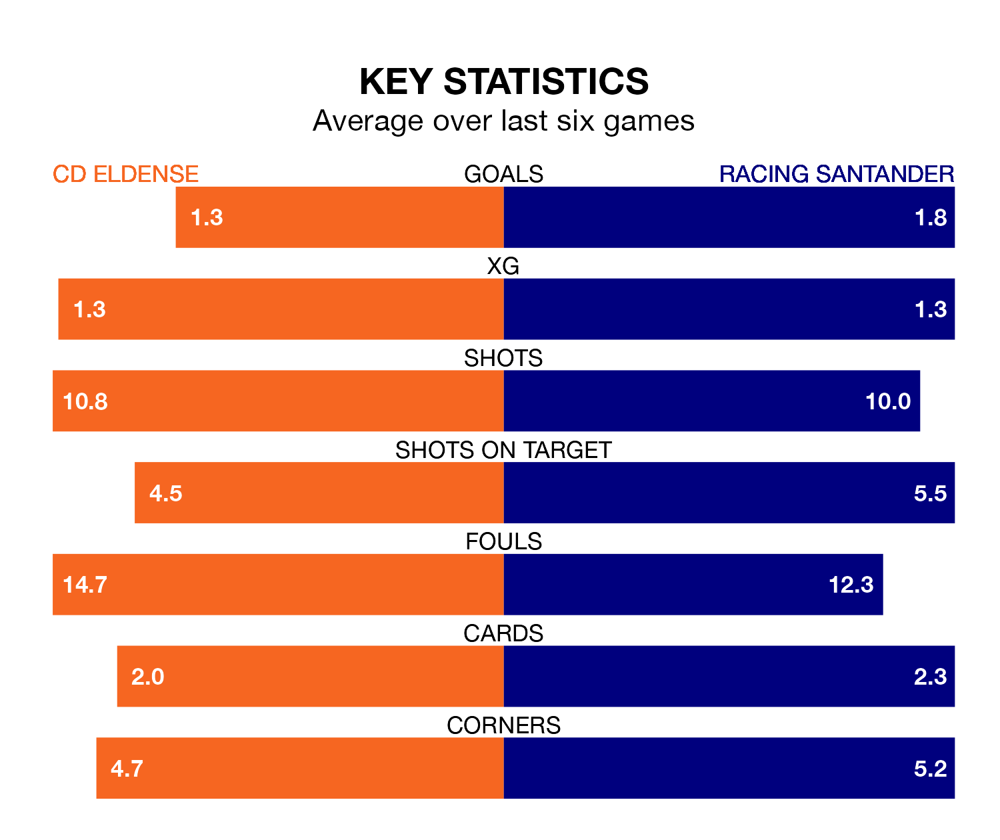

Racing Santander travel to CD Eldense on Saturday lunchtime in the Segunda División.
The visitors come into the game on the back of a draw in their last match, having tied with Real Oviedo 2-2 at home, with goals from Gerard Fernández Castellano.
CD Eldense also drew their last match, 1-1 against Leganés, with their goal scored by Sergio Ortuño Díaz.
With 31 goals in 19 games so far this season, Racing are the league's second-highest scorers with 1.6 goals per game. But they are conceding more than average too, letting in 26 goals at a rate of 1.4 per game.
Eldense, meanwhile, are average scorers, with 1.2 goals per game. They have conceded 1.5 goals per game.
In Fernández Castellano, Racing Santander have the league's sharpest shooter so far this season. He has notched 10 goals in 18 appearances.
His goal rate of one every 117 minutes is quicker than that of Juan Tomás Ortuño Martínez, CD Eldense's top scorer with a goal every 156 minutes, and a total of five goals in 16 games.
The hosts are 16th in the table after 19 games, of which they have won six and drawn six, earning 24 points.
The away team are eight places ahead of Eldense in eighth, with eight wins and five draws putting them on 29 points.
Eldense are in mixed form in the Segunda División, with two wins and two draws from their last six games.
And also with two wins and two draws over that period, Racing's form is identical – they have both taken eight points from 18.
